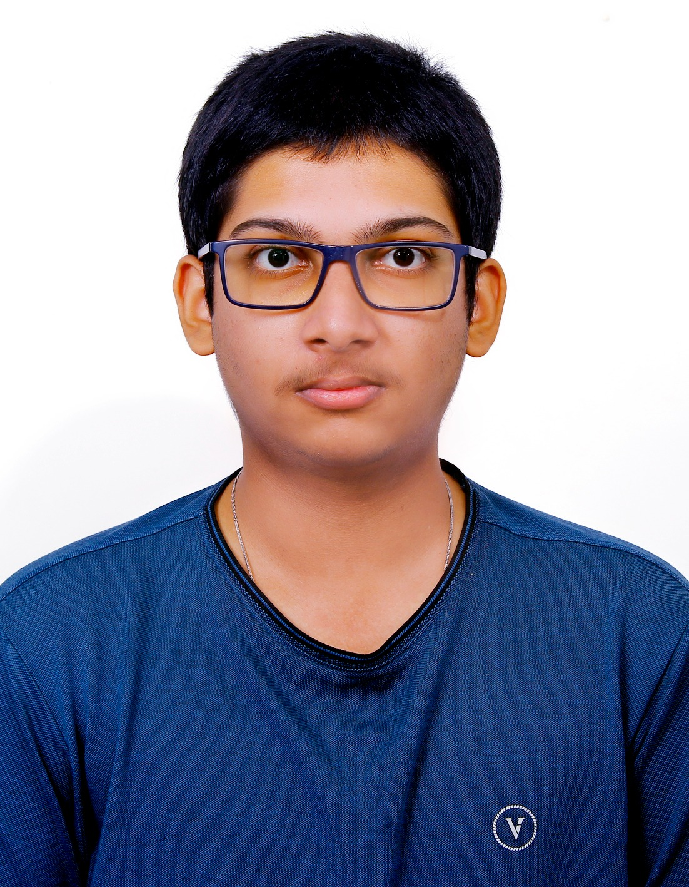

Chettupelly Dhiren
Finalized the PS parameters and worked on association rules and forecasting. Also designed the layout of the final results.
The people behind this project.

Finalized the PS parameters and worked on association rules and forecasting. Also designed the layout of the final results.

Carried out the cluster analysis and the statistical analysis for the project.
Wrote the LaTeX report and drew out the insights from the results.
Handled the time series analysis for the project.
Took care of data collection and data cleaning.